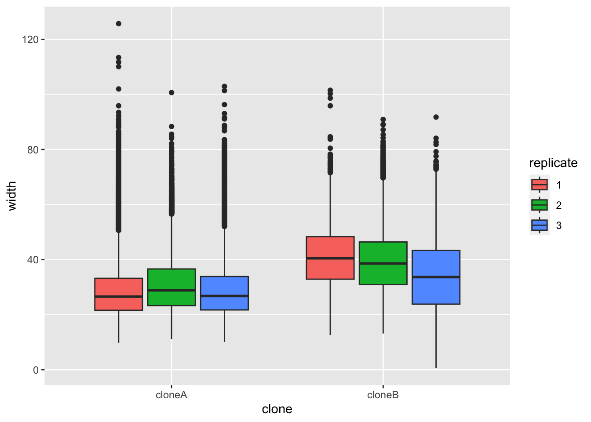
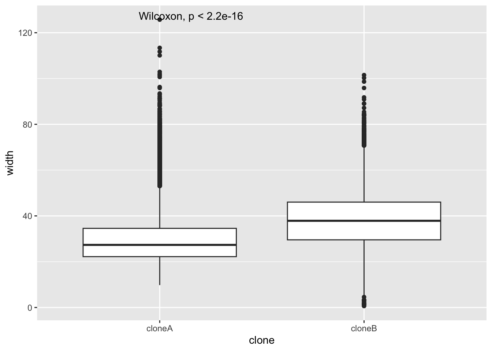

#Data Analysis 2: Cell Biology
#date 2024-30-01BIO00066I Workshop 2
Cell Biology Data Analysis Workshop 2
Colour scheme
In these workshops, we highlight some elements in boxes like this:
Important concepts
Particularly important ideas or skills.
Be careful
Where to be careful.
Things to think about
What does this result show about the biology?
Information
Mesenchymal stem cells are multipotent, but not pluripotent.
1 Learning objectives
In this workshop, you will learn technical skills and data science concepts.
Technical skills
- RStudio skills to manage, view and analyse large data sets
- How to create plots in RStudio to assist with exploring and interpreting data
- How to make your data analysis reproducible and well-explained
Thinking like a data scientist
- How to interpret data with care
- How to integrate knowledge from laboratory work and computational analysis
2 Introduction
Philosophy
Workshops are not a test. It’s OK to make mistakes. It’s OK to need help. You should be familiar with independent study content before the workshop, but you don’t need to understand every detail. The workshop will hlpe you to build and consolidate your understanding. Tips:
- there are no stupid questions (ask us anything!)
- don’t worry about making mistakes (we all make mistakes)
- discuss code with your neighbours and with the staff
- outside of workshop times, google is a good resource
2.1 The biology
Today we will look at some data from mesenchymal stem cells (MSCs, sometimes called stromal cells). MCSs are are multipotent stem cells, than can differentiate into many kinds of mesenchymal cells: bone, cartilage and fat cells. They are not pluripotent, in that they do have limits about how they differentiate.
MSCs are also:
- immuno-modulatory (they make cytokines)
- heterogeneous (they have subpopulations that are different from each other)
The MSCs we are looking at are from bone marrow femoral head tissues (from the hip bone). These MSCs were immortalised (by XXX), and then cloned by limiting dilution. We will compare the data on cell shape and size from just two clones, both obtained from one person’s femoral head tissues. Each clone was derived from a single cell from the person.
We call these two clones clone A and clone B. Today, we will use our data analysis skills to explore how these cells differ.
2.2 Research questions
- What parameters do we have in the data obtained from the XXX machine/method?
- Which parameters differ between the clones?
- Which parameters are correlated?
2.3 The data
The data we have today are derived from an XXX machine. We grew each clones in XXX media, and captured cell shape an size information for many cells from each clones with XXX machine. For each clone, we measured three biological replicates.
Biological replicates and technical replicates
A biological replicate repeats an experiment from different cell types, tissue types, or organisms to see if similar results can be observed.
Technical replicates are repeat measurements of the same biological material, which help to show how much variation comes from the equipment or different methods (rather from the biology).
Our replicates are almost biological replicates, because we grew the cells three times.
Thinking like a data scientist
Data science can be challenging when you first start. But data science does have core concepts, like any other science.
- Consider the motivation or scientific question before drawing a plot
- Reflect on how the plot or analysis addresses the scientific question
- Use each plots to adapt, to inspire new research questions and new inquiries
- Ensure that your scripts are reproducible and clearly commented
- Consider what the results tell you about the biology
3 Exercises
3.1 Getting started
- Start RStudio from the Start menu
- Open your RStudio project using the dropdown menu at the very top right of the RStudio window.
- Make a new script then save it with a sensible name that will help you to know later what is in this file.
BIO00066I-workshop2.Rwould work. - Add a comment to the script so you know what it is about, for example
- Clear all the previous data, and load
tidyversepackage by adding these lines to your script:
- Finally load another library that allows us to make multi-part plots (this can be useful sometimes). #we need this to make pretty plots with the ‘ggarrange’ package
- Make sure all these lines of code are in your script, with comments.
- Save the script.
Comment your code!
In R scripts, lines that start with the hash symbol (#) are comments.
Commenting code makes it readable, for you and anyone else. Good data science includes clearly commented code.
3.2 Loading the data
In workshop 1, we showed you how to import data from files. Today, we load a tab-separated value (TSV) file from a website:
cells <-read_tsv(url("https://djeffares.github.io/BIO66I/data/all-cell-data-FFT.filtered.2024-01-19.tsv"),
col_types = cols(
clone = col_factor(),
replicate = col_factor(),
tracking.id=col_factor(),
ineage.id=col_factor()
)
)
About read_tsv
We use the read_tsv function to read the tab-separated value file. Clicking on the link in the read_tsv takes you to a website about this function. All the code chunks in these workshops have links like this.
The clone = col_factor(),replicate = col_factor() part let’s R know that we want the clone column and the replicate column to be factors, rather than numeric values. Factors are used to represent categorical data.
3.3 Exploring the data
It is important to know what data you have. How many rows and columns etc.
There are many ways to do this in R. Here are some of our favourites. Copy and past these into your R script, and try them out.
##Amanda: should we remove some of the less-useful columns? #This will keep it simple for the students #Are the different measurements of cell size & shape independent measures?
Which method of do you like the best?
Why not take a note of this, and use it all the time?
3.3.1 What is in the data?
You may have noticed that we have two clones (cloneA and cloneB). For each clone, we have three replicates. For each replicate, we have many readings of cell widths, cell volume, cell sphericity and so on.
Now save your data and save your script. This command will save all the variables you have loaded, or created so far:
#save all my stuff
save.image("BIO00066I-workshop2.Rda")You can load all the data again with:
#load all my stuff from last time
load("BIO00066I-workshop2.Rda")3.4 Summarise with dplyr
The view(cells) command shows that we have many cell shape metrics. We saw a summary of our cell shape metrics with the summary(cells) command above.
Now we will do something even better, by using a tool from the dplyr package (part of the tidyverse) to make some sense of all this data very quickly.
dplyr is wonderful
dplyr is like a set of pliers, helping us to ‘bend’ or ‘reshape’ our data.
Here is the command. I will explain it below.
summary.table <- cells |>
group_by(clone, replicate) |>
summarise(
volume=median(volume),
mean.thickness=median(mean.thickness),
radius=median(radius),
area=median(area),
sphericity=median(sphericity),
length=median(length),
dry.mass=median(dry.mass),
perimeter=median(perimeter),
length.to.width=median(length.to.width)
)3.4.1 What this code does
The
cells |>part takes the data from thecellsdata frame, and ‘pipes’ it into thegroup_byfunction. The|>symbol as means put this data into the next bit.group_by(clone, replicate)means that make groups of data, according to which clone they are, and which replicate culture they were from.summarisecalculates some summaries of all the data rows (for each clone and replicate). The partvolume=median(volume)creates a header calledvolumeand fills this with the median cell volume for each clone and replicateRight at the top,
summary.table <-stores the results of all the piping in an object calledsummary.table.
Have a look at the information we generated with:
view(summary.table)
Do you see any patterns in this data?
- What does this table tell you about clone A and clone B?
- What does this tell you about mesenchymal stem cells?
3.5 Making plots
It looks like many of the cell shape metrics from above might differ between clones. So let’s look deeper, starting with cell width. We will make a box and whisker plot. We use a small ‘trick’ here: by including fill=replicate we force R to make different plots for each replicate.
ggplot(cells,aes(x=clone,y=width,fill=replicate))+
geom_boxplot()
Making plots with ggplot
No matter what shape plot you want, ggplot uses the same syntax.
- Start by telling R what data you want to use like this:
ggplot(some_data_frame,aes(x=x_axis_data, y=y_axis_data) +
In this line, x_axis_data and y_axis_data are columns of some_data_frame.
- Then define what the shape plot you want (the ‘geometry’):
geom_boxplot(),geom_histogram()etc. - Add extra things to customise your plot, eg:
xlab("my x axis label")
If you are unsure what to do, it’s OK to ask! Googling “ggpplot how to make a boxplot” (or any other plot) will help.
It does look like clone A and clone B differ consistently in width, with all repeats. To prove this, we would like to do a statistical test. A Student’s t-Test t.test would work. But t-Test’s assume that the data are normally distributed (like a bell curve).
We can test this approximately by plotting data, as below. It doesn’t look perfectly ‘bell shaped’, so let’s play is safe and use a nonparametric test.
ggplot(cells, aes(x = width)) +
geom_density()The nonparametric equivalent of a t-Test is a Wilcoxon rank sum test. There are two ways to run this test in R. We can do wilcox.test(vectorA, vectorB), where vectorA and vectorB contain the numeric values we want to test.
But does does not suit tidyverse data frames very well. So we will use the wilcox.test(numberic_value ~ categorry_name, data = some_data_frame) method, like so:
#Wilcoxon rank sum test
#To test if cloneA and cloneB have statistically different widths
wilcox.test(width ~ clone, data = cells)
Wilcoxon rank sum test with continuity correction
data: width by clone
W = 562074424, p-value < 2.2e-16
alternative hypothesis: true location shift is not equal to 0Because the p-value is very low (< 2.2e-16), this means the null hypothesis (that both sets of numbers come from the same population) is very unlikely to be true.
Non-parametric tests are safe
Parametric tests are based on assumptions about the distribution of the real data. Nonparametric statistics are not based on these assumptions. So they are safer. Many biological metrics need nonparametric tests.
3.5.1 An easier way
Fortunately, you can add the results of nonparametric tests to ggplot, by adding stat_compare_means() to our plot. Note that below we do not force R to split up the replicates as we did above.
ggplot(cells,aes(x=clone,y=width))+
geom_boxplot()+
stat_compare_means()
4 Next step: modify the code
Practise makes perfect
To increase your ubderstanding, run through all the plots in section 3.5 with some other cell shape or size metric.
To start, find what metrics are present with:
names(cells)We suggest using one of these, in place of width:
- volume
- mean.thickness
- radius
- area
- sphericity
- length
- dry.mass
5 Analysis with small data
So far, we have used all the rows in our data frame. But perhaps, this isn’t wise.
#take the mean of each unique tracking id
trackingid.summary.table<-cells |>
group_by(clone, replicate, tracking.id) |>
summarise(
volume=median(volume),
mean.thickness=median(mean.thickness),
radius=median(radius),
area=median(area),
sphericity=median(sphericity),
length=median(length),
dry.mass=median(dry.mass),
perimeter=median(perimeter),
length.to.width=median(length.to.width)
)`summarise()` has grouped output by 'clone', 'replicate'. You can override
using the `.groups` argument.#how many rows
row.count<-nrow(trackingid.summary.table)
#subset
#sample_n samples a number of rows at random
#If the data frame is grouped, the number applies to each group
#Our sample is group by
trackingid.small.data <- sample_n(trackingid.summary.table, 5)
glimpse(trackingid.summary.table)Rows: 13,688
Columns: 12
Groups: clone, replicate [6]
$ clone <fct> cloneA, cloneA, cloneA, cloneA, cloneA, cloneA, cloneA…
$ replicate <fct> 1, 1, 1, 1, 1, 1, 1, 1, 1, 1, 1, 1, 1, 1, 1, 1, 1, 1, …
$ tracking.id <fct> 1, 2, 534, 537, 3, 814, 4, 7, 9, 11, 12, 661, 13, 14, …
$ volume <dbl> 1154.725, 1725.695, 1269.765, 1248.555, 1654.985, 1176…
$ mean.thickness <dbl> 1.2803999, 1.2148985, 2.1121036, 1.0129144, 1.3742726,…
$ radius <dbl> 16.94749, 21.55961, 14.41782, 19.69785, 20.18902, 11.1…
$ area <dbl> 903.430, 1460.270, 674.805, 1219.025, 1280.555, 393.50…
$ sphericity <dbl> 0.2850, 0.2350, 0.4360, 0.2210, 0.2635, 0.6080, 0.2500…
$ length <dbl> 61.410, 94.550, 55.825, 105.475, 79.120, 26.560, 50.01…
$ dry.mass <dbl> 288.680, 431.420, 317.435, 312.135, 413.740, 294.060, …
$ perimeter <dbl> 151.020, 223.540, 134.055, 215.225, 199.255, 71.850, 1…
$ length.to.width <dbl> 2.560749, 2.754384, 2.443677, 3.612040, 3.034136, 1.34…nrow(trackingid.small.data)[1] 30glimpse(trackingid.summary.table)Rows: 13,688
Columns: 12
Groups: clone, replicate [6]
$ clone <fct> cloneA, cloneA, cloneA, cloneA, cloneA, cloneA, cloneA…
$ replicate <fct> 1, 1, 1, 1, 1, 1, 1, 1, 1, 1, 1, 1, 1, 1, 1, 1, 1, 1, …
$ tracking.id <fct> 1, 2, 534, 537, 3, 814, 4, 7, 9, 11, 12, 661, 13, 14, …
$ volume <dbl> 1154.725, 1725.695, 1269.765, 1248.555, 1654.985, 1176…
$ mean.thickness <dbl> 1.2803999, 1.2148985, 2.1121036, 1.0129144, 1.3742726,…
$ radius <dbl> 16.94749, 21.55961, 14.41782, 19.69785, 20.18902, 11.1…
$ area <dbl> 903.430, 1460.270, 674.805, 1219.025, 1280.555, 393.50…
$ sphericity <dbl> 0.2850, 0.2350, 0.4360, 0.2210, 0.2635, 0.6080, 0.2500…
$ length <dbl> 61.410, 94.550, 55.825, 105.475, 79.120, 26.560, 50.01…
$ dry.mass <dbl> 288.680, 431.420, 317.435, 312.135, 413.740, 294.060, …
$ perimeter <dbl> 151.020, 223.540, 134.055, 215.225, 199.255, 71.850, 1…
$ length.to.width <dbl> 2.560749, 2.754384, 2.443677, 3.612040, 3.034136, 1.34…6 Reflection
- After loading the data, what did we do first?
- What did making the plots do that summary statistics (liek average, or median) cannot do?
- What did we learn about the two clones?
7 After the workshop
Look at your script again. Add some comments, so that the next time you look at it, it will make more sense to you.
Also, have a go at the consolidation exercises below.
7.1 Consolidation exercises
- We used
geom_boxplot()to show the differences between categories (clone A and clone B). Trygeom_violininstead. Which one do you prefer?
ggplot(cells,aes(x=clone,y=width,fill=replicate))+
geom_violin()- Now adjust the title with
ggtitle(label), and the axis labels withxlab(label)andylab(label), and the theme (the general style of the plot), withtheme_classic(). Use whatever theme you feel makes the data clear.
ggplot(cells,aes(x=clone,y=length,fill=replicate))+
geom_violin()+
ggtitle("something")+
xlab("clone")+
ylab("length")+
theme_classic()7.2 Planning for your report
8 The end.
We hope this was useful.